\"Indian Silicon Valley\" Bangalore's community of Engineer
- Introduction
- The Events
- Summary
- About the Author
- The engineer of Ruby on Rails, grown up with Ruby. It is happy to be able to contribute to the longing Rubyist magazine I ヽ(=´▽`=)ﾉ
The author : ctokoro (ctokoro)
Introduction
Hi! My name is Chikahiro Tokoro, I’m a Rubyist and working as freelance.
April-September 2014, I’ve traveled some part of India as a backpacker. I stayed in Bangalore which called “Silicon Valley of India” in May, and I had some communication with local Rubyist. I want to share you my experience of Bangalore.
I’ve already wrote some articles on “The Huffington Post (Japanese Edition)” 1, In this time I’d like to write about the meetups and conference that I’ve not mentioned before.
The Events
1. Emacs Meetup
First of all, I attended to Emacs Meetup on Sunday! Actually Im not the Emacs user, but there were few choices of meetups which i could attend during my stay.

Unfortunately, I got big lost on the way. I was only able to attend the last of those, it had been a lot of talk of LISP when I arrived. 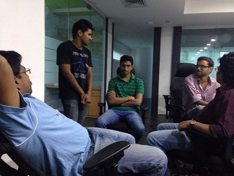
The older guy of blue polo shirt with Microsoft’s logo, seemed to be famous engineer. Some young engineers wanted to get advise from him, and he said “Certainly, it looks like solution. But in this case you will know it is not solve the problem”. He looks like Guru.
I think the programmers are not raised in the only younger generation in india, but from pretty before. I felt the thickness of the generational layer of Indian engineers.

The end of chatting with drink, everyone had started to code something seriously. I asked them and they told me they started the small hackathon. “Building the web server from scratch with different languages (Node.js, Erlang, C, and Haskell), and whose one is the most scalable web server for connections”
Node.js Geek: “Damn! I can not successfully control !!”
Blue polo shirt Guru: “Yeah, It is the popular trap of Node.js architecture.”
…… It was really high level world for me…;(
2. Extreme Tuesday Club
Next, I attended to the programmer’s casual meeting which hold on every Tuesday night at the bar.

There was no particular theme, and it was like a place which can exchange and share information each other while drinking in free atmosphere. The people who gathered was extremely Geek. On the table, one engineer talking with excitement “Look! I made cool library of Clojure! nice code, isn’t it?!”

In Japan, I’ve never heard about this kind of meeting. Usually it will not happen in bar, and it has always the theme. I think japanese engineer and here’s one has quite different lifestyles and characters. And in here, The Software Engineer has great status.
The frequently heard programming languages were Clojure, Node.js, Haskell, Ruby,Scala, and especially Clojure. I felt a wave of functional programming!
Basically every engineer knows Java, I think that’s why Clojure and Scala were booming in here. Enterprise code were generally written in Java, it’s same situation with japan. Dynamic language’s programmers were less number than them.
Well, My next attending meetup will be Bangalore Ruby community! ! I heard the ruby community of Bangalore were pretty active, normally 20-40 rubyist will be there monthly. It sounds nice!!
So I checked the email, and i got shocking news from ML. it will be canceled because the big conference will be happen in same day. It was, Rootconf!
3. Rootconf
Rootconf 2014 had 2 days workshop, 2 days conference, totally 4days event. I heard excellent reputation about it from my local friends.
It was organized by HasGeek, they also organized the conference of JavaScript JSFoo 2014, Android Droidcon India and so on.
So, I bought a ticket for it. Let’s attending it!!

Here is the venue. There was a big sign board, there are list of the big sponsors!
I did the reception at the entrance, get the participation certificate! 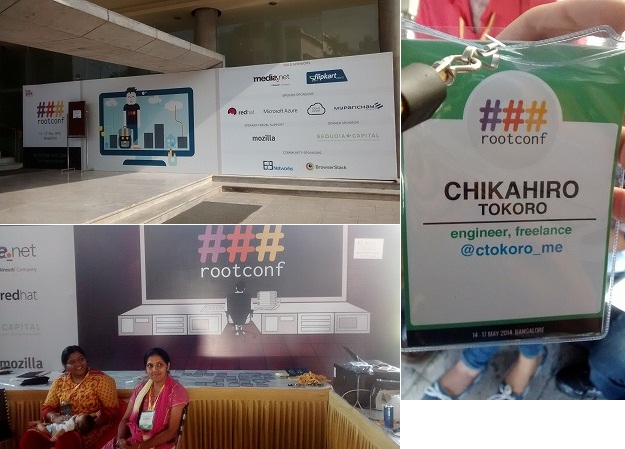
Entering the Inside, there were some companies booths, and it looks lively.
 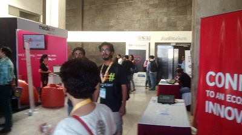
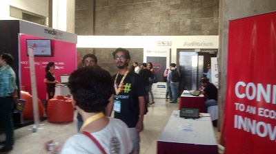
Rootconf’s theme is “DevOps and Cloud infrastructure”. (The conference name was inspired by UNIX, right? The logo is user of administrator “root”! )
I could attend only the second two days, and i heard some sessions. They were talking about DevOps such as Docker and Chef, infrastructure architectures, protection from DDoS, the use case of PostgreSQL as like NoSQL, Go language, the file system, etc.
The conference dealing with the wide range of topics.2
 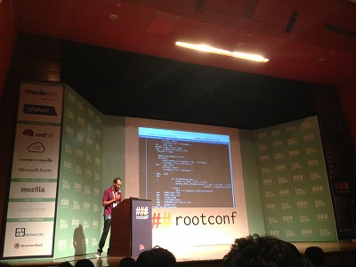
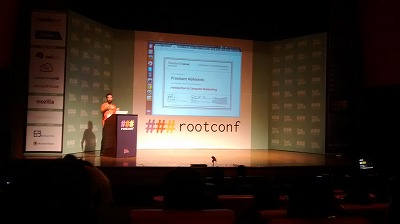
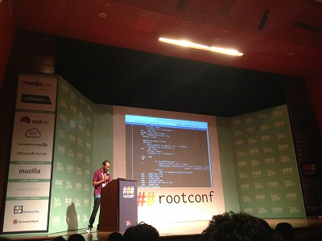
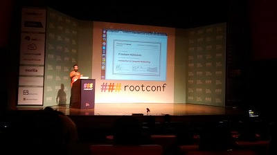
When it comes to the night, they served sponsored dinner. 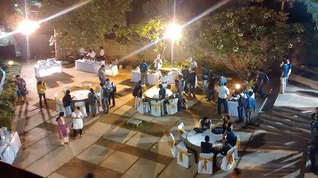 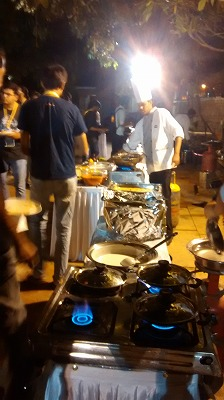
Many Indian foods (such as chapati and curry) were served by chef in front of the eye, taste was awesome! (I like Indian foods:) )
In second day of conference, they had recruited Flash Talk speaker from the participant. I hurriedly applied it, and they accepted my theme! 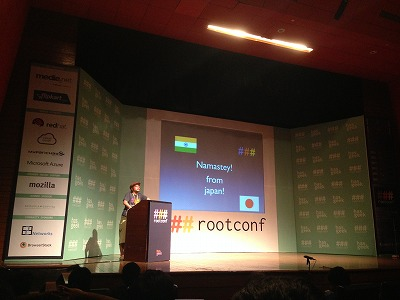 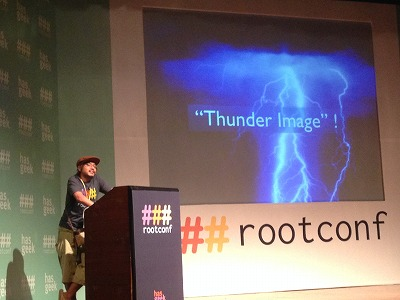
My presentation wes same with Lightning talk of RubyKaigi 2013 I’ve done before3. I was glad that some of them liked my presentation.
At the end, I took a photo with Sreekandh B., an Editorial Panel member who helped put together content for Rootconf.

I could communicate with more engineers in this event, even I could have a small session that was the first overseas conference for me. I was very satisfied!
Summary
It was short stay in Bangalore, only two weeks but I think it was fruitful stay, I could feel the atmosphere with local engineers.
And I made sure “ The engineer’s mind is similar in everywhere”. It’s quite natural things because we are trying to solve the same problem by using same tools. It should be.
The most impact thing for me is the big number of engineers. Bangalore is the city of approximately 10 million people 4. And my friends told if you collect 10 people on the road randomly there could be 1-2 programmers.
If it is true and simply calculate, it means there are 1-2 million programmers only in Bangalore! ! And further surprisingly, the IT city in india is not only Bangalore, there are some! Of course every them are not excellent engineer’s I hope, but it could have a huge number of high-level engineers.
And there were few Japanese engineers there nowadays, but Bangalore is really nice place especially for engineer. Someday I want to work in India! Its paradise for engineers, isn’t it?
Lets’ visit Bangalore when you get a chance!